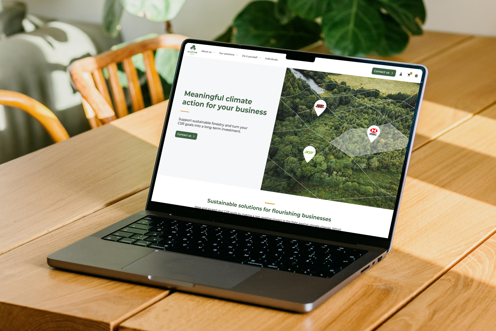
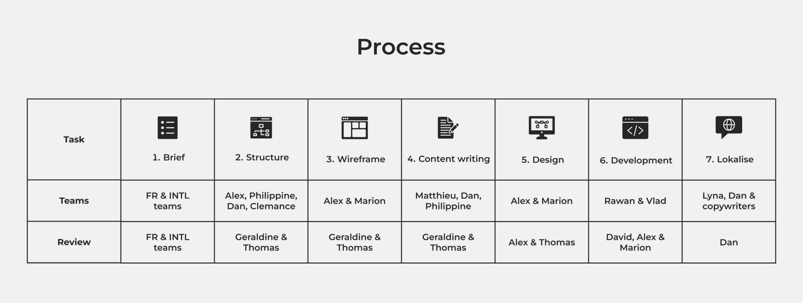
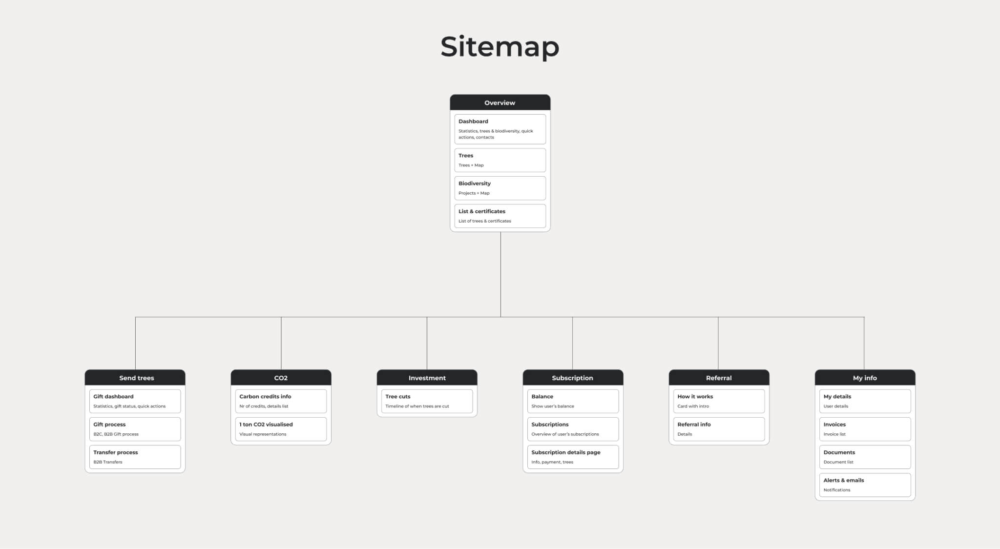
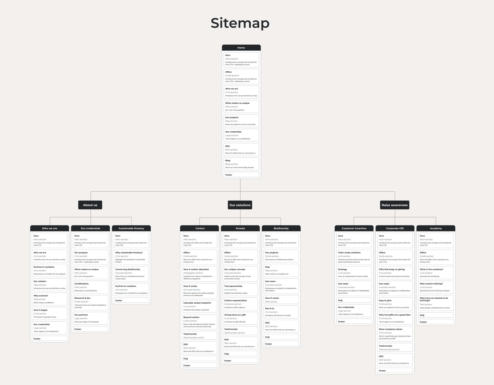
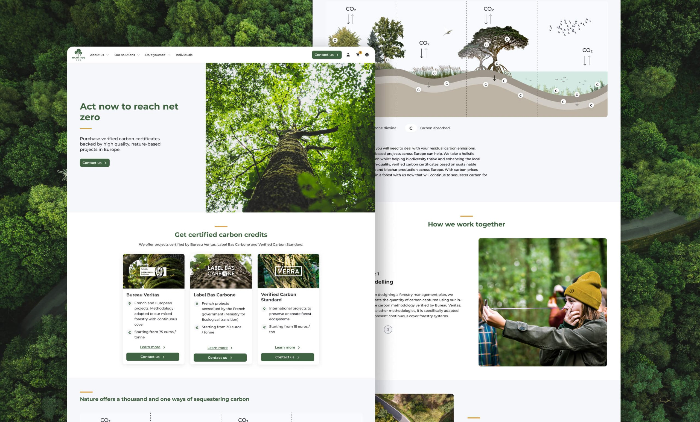
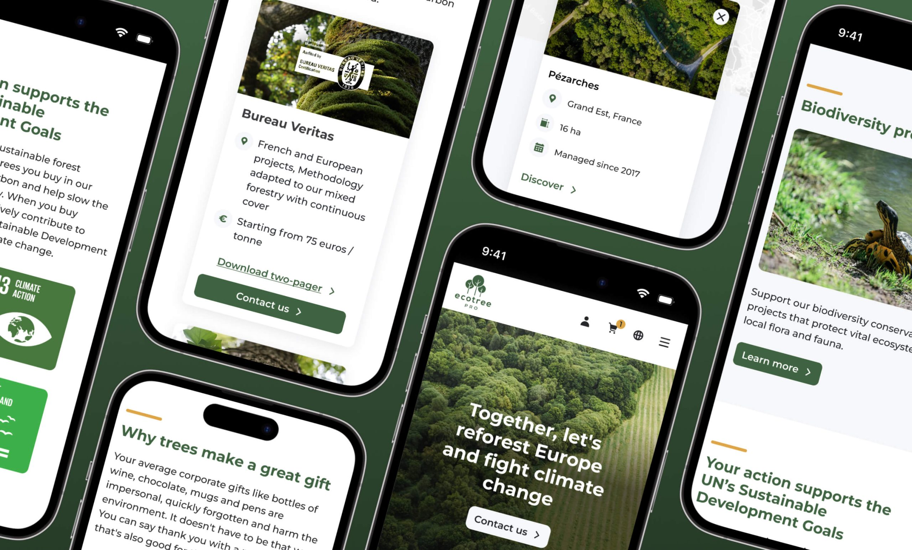
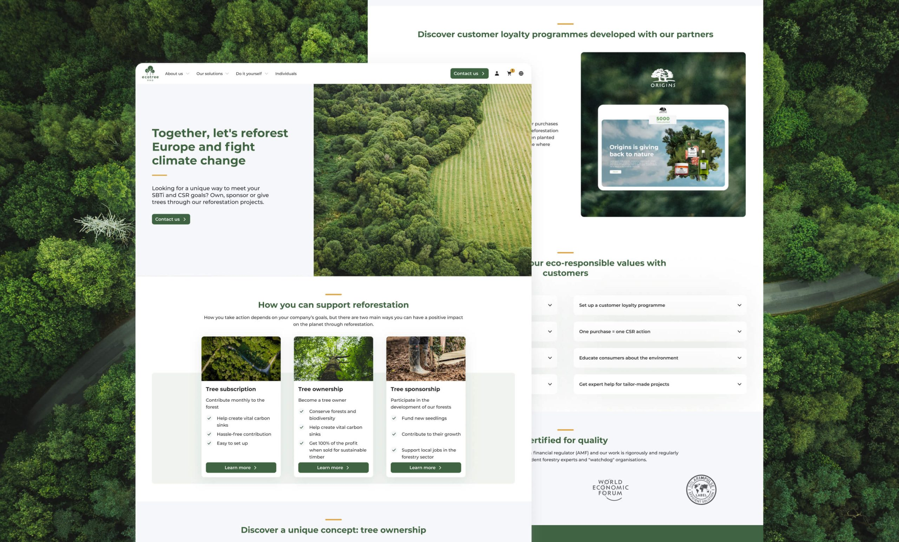
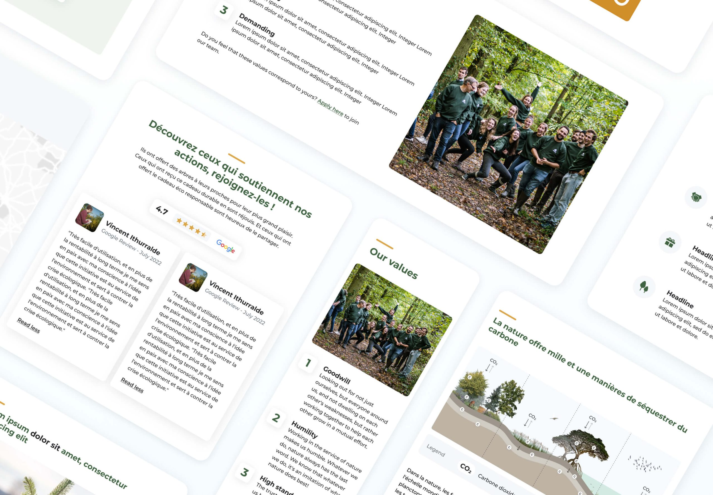

EcoTree expanded into carbon credits and biodiversity solutions for companies. They needed a site that could explain complex environmental products clearly — to audiences who had never bought a tree before.

Impact
Company
EcoTree International
My role
Lead Designer — structure, wireframes, UI
Team
+ 1 Designer (Paris), 1 Student Designer, Marketing + Copywriters
EcoTree had developed new B2B solutions — carbon credits, biodiversity projects, tree ownership for companies — but no website to present them properly. The old site was built for individual buyers. This was a different audience: sustainability managers, procurement teams, CSR leads.
The brief came down to two things. Make it easy to understand what EcoTree actually offers. And make the expertise feel credible. The keywords from the brief: expertise, corporate, nature-based solutions.
With teams across France and Denmark, plus marketing and copywriters involved, we needed a clear process before touching any design tools. Seven stages, each with defined owners and reviewers.
FR and INTL teams aligned on goals, audience, and content priorities before anything else started.
Alex, Philippine, Dan, and Clemance built the sitemap and decided which sections each page needed. Reviewed by Geraldine and Thomas.
Alex and Marion translated the structure into wireframes, working in parallel with the copywriting team so content and layout evolved together.
Built on the EcoTree design system. Photo selection, pictograms, and custom infographics — including a diagram showing how carbon is absorbed in different ecosystems.
Rawan and Vlad handled development with David, Alex, and Marion reviewing. Dan and the copywriters handled localisation across languages.

Seven stages, clear owners at each step — the only way to coordinate a project this size across two countries.

The sitemap — home, solutions (forest, carbon, biodiversity), about us, and raise awareness sections, each with its own page hierarchy.

Wireframes built in parallel with the copywriters — structure and storytelling developed together, not sequentially.
The visual design pulled from the EcoTree design system, which meant consistent components and faster development. The heavier lifting was in the content design: selecting and editing the right photography, creating custom carbon sequestration infographics, and making complex scientific concepts readable for a non-specialist B2B audience.

Carbon credits page — complex product, clear layout, custom infographic explaining sequestration.

Forest solutions page — visual hierarchy guides the reader from hero to CTA without friction.

Loyalty programme page — built for partnership and co-branding use cases.

Full site overview — home page, solutions, about us, and raise awareness sections.